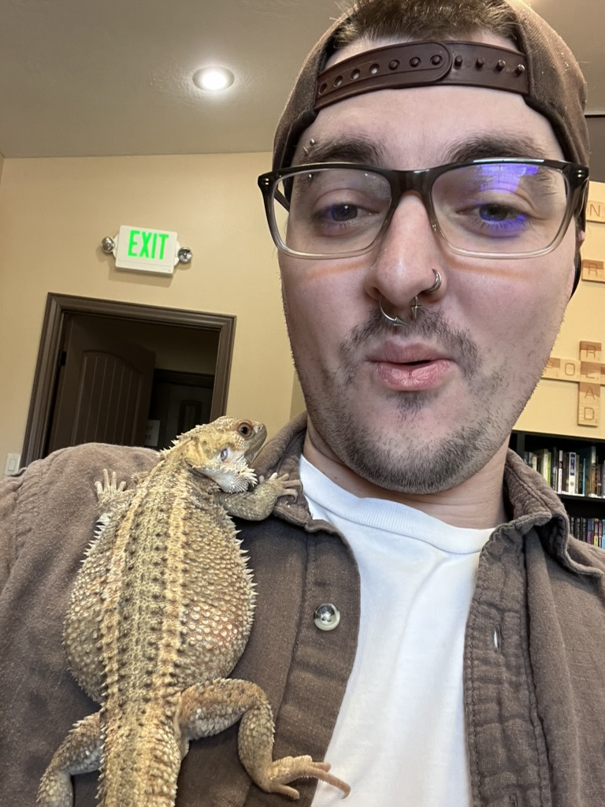

Jacob LaFerriere - Portfolio
Student of Cybersecurity
About Me
I am a cybersecurity student at Southern Utah University who has worked within numerous fields such as insurance and pharmacy. My goal is to become a professional within the industry to assist companies in protecting their valurable data. While new to the field, I have a background in working with hardware and software troubleshooting, I aim to become far more knowledgable within the field.
Projects
- CSCY 2000 Team Website — NOAM Cybersecurity Company
- Collaborated with teammates to design and deploy a responsive, Bootstrap‑based site with educational cybersecurity resources.
Skills
- Customer Service
- Hardware and Software Troubleshooting